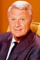

Country:United States, 25 minutes
Spoken languages:
Genres:Animation, Family, Sci-Fi
Director(s):Hawley Pratt
Writer(s):Dr. Seuss
Video Codec:Unknown
Number: 1282


Certification:PG
Storyline:
The Once-ler, a ruined industrialist, tells the tale of his rise to wealth and subsequent fall, as he disregarded the warnings of a wise old forest creature called the Lorax about the environmental destruction caused by his greed.
Cast: 


Medium: Original DVD,
Loaned: No
Aspect ratio: Unknown